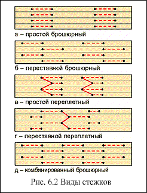

Технологический процесс шитья нитками и швейные инструменты
6.1
Процесс петлеобразования при простом брошюрном стежке
Исходным положением швейных инструментов является расположение иглы 1 с нитью и крючка 2 (носиком к ним) выше фальца, точно вдоль оси движения
(рис. 6.1). Ниже находятся проколы 3, слева - их шибер 4.
Очередность операций при шитье следующая:
1) проколы поднимаются вверх вдоль своих осей, прокалывая фальц тетради, которая лежит на седле качающегося стола (рис.
6.1, а). Этим облегчается введение в середину тетради иглы и крючка. Может
возникнуть вопрос, а нужны ли проколы? Почему иглы крючки сами не могут пробить
тетрадь? Дело в том, что при применении тонких тетрадей из мягкой бумаги в
принципе это возможно. Но на практике чаще обрабатывают 16- и 32-страничные
тетради из бумаги различных сортов, при прокалывании которых возникает
значительное усилие (10-20 Н на одну иглу). Поэтому возможны обрывы нити,
поломка крючка. С износом инструментов эти явления будут усиливаться, вследствие
чего предварительное прокалывание тетради является обязательным; 2) сделав
отверстия в фальце тетради, проколы опускаются вниз. Одновременно вслед за ними
начинает опускаться швейная каретка, при этом иглы и крючки проходят через фальц
в пробитые отверстия; крючок одновременно вращается вокруг своей оси; 3)
после достижения нижнего положения каретка немного приподнимается, на игле
образуется запас нити, из которого образуется нитяная петля; 4) шибер (рис.
6.1, б), проходя возле иглы, захватывает петлю нити и, растягивая ее, двигается вправо к крючку (рис.
6.1, в), проходит мимо него и заходит за крючок (рис. 6.1, г), при этом верхняя ветвь нити ложится точно на зев крючка (носик его и это время повернут к шиберу). Для точной передачи петли крючку шибер делает качательное движение в его сторону. Швейная каретка поднимается при этом, захватив нить, начинает выводить его наверх, одновременно вращаясь вокруг своей оси, а шибер возвращается в исходное (левое) положение (рис.
6.1, д). Крючок при дальнейшем подъеме протягивает нить через отверстие в фальце вверх (рис.
6.1, е). При этом петля, образованная в предыдущем рабочем цикле, легко соскальзывает по гладкой тыльной стороне крючка и охватывает новую петлю, которая выведена с тетради крючком в этом рабочем цикле.
6.2
Виды стежков
Внешний вид блока, сшитого простым брошюрным стежком, показан на рис. 6.1. Существует еще два вида стежков, которые могут быть выполнены на ниткошвейной машине: простой переплетный и переставной переплетный. 
Отличие переставного переплетного стежка от простого брошюрного состоит в том, что петля нити в каждой последующей тетради ведется шибером в разных направлениях.
Переплетные стежки отличаются от брошюрных наличием сдвига в одном месте, ее растягивание в разные стороны способствует лучшему скреплению корешкового материала с блоком, более равномерному шитью.
Переставным стежком рекомендуется сшивать любое книжные издания, поскольку он почти не утолщает корешка и обеспечивает высокую прочность шитья. Им обычно сшивают блоки энциклопедических и подобных им изданий, имеющих большой объем.
Комплект швейных инструментов для образования простого брошюрного или переплетного стежка состоит из швейной иглы, двух проколов, крючка и шибера. Причем для шитья простыми стежками количество швейных игл равно количеству крючков. При переставном переплетном стежке в работе участвуют три иглы, два крючка и три шибера.
Количество шиберов при всех видах стежков равно количеству игл. Количество проколов для брошюрных стежков равно сумме игл и крючков, для переплетных — определяется общим числом отверстий в корешке тетради, необходимых для прохождения игл и крючков.
Количество стежков, а значит, и необходимых комплектов швейных инструментов зависит от формата продукции, ее назначения. Инструменты устанавливаются согласно таблиц настройки, которые имеются в технической документации на машину.
6.3
Схема расположения швейных инструментов
Обычно швейный аппарат ниткошвейной машины состоит из двух частей: швейной каретки ШК и качающегося стола КС (рис. 6.3). При этом обе части не находятся в стационарном положении: швейная каретка осуществляет реверсивное движение вверх-вниз, а качающейся стол производит качание в плоскости, перпендикулярной рисунку. Большую часть цикла обе части швейного аппарата разведены и лишь на некоторое время (примерно треть цикла) они соединяются и взаимодействуют вместе.
На швейной каретке находятся иглы, которые крепятся на игольной планке, и крючки. Поскольку швейная каретка периодически опускается и поднимается на величину 32,44 мм (рис. 6.4), с нею соответственно перемещаются также иглы и крючки. Конструкцией предусмотрено два варианта расположения игл относительно швейной каретки: неподвижны при шитье простым брошюрным стежком и имеют поперечный сдвиг вмести с планкой при шитье переставным переплетным стежком. крючки 3 кроме перемещения вместе кареткой имеют вращательное движение вокруг своей оси за счет взаимодействия рейки и зубчатых колес.
Проколы и шиберы расположены на качающемся столе и перемещаются вместе с ним. Проколы крепятся на специальной планке, которая имеет односильное движение вверх-вниз на величину 30 мм. Шибера сидят на шиберной планке рядом с планкой проколов внутри качающегося стола и имеют сложное движение: они перемечаются вдоль шиберной планки (это необходимо для переноса петли нити от иглы на крючок) и, кроме того, поворачиваются на 5 градусов по направлению к крючку.
Как видим, движение рабочих инструментов в процессе шитья достаточно сложное и выполняется к тому же на значительной скорости, время их взаимодействия очень ограничено. Поскольку объектом взаимодействия инструментов является тонкая нить, необходима высокая точность их работы. Поэтому к конструкции всех швейных инструментов (проколов, игл, крючков и шиберов) предъявляются высокие требования.